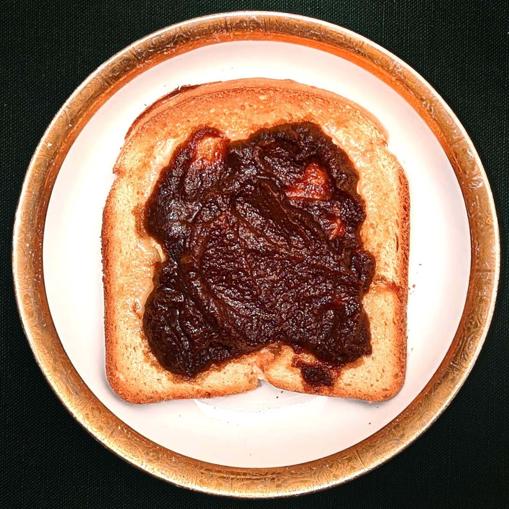
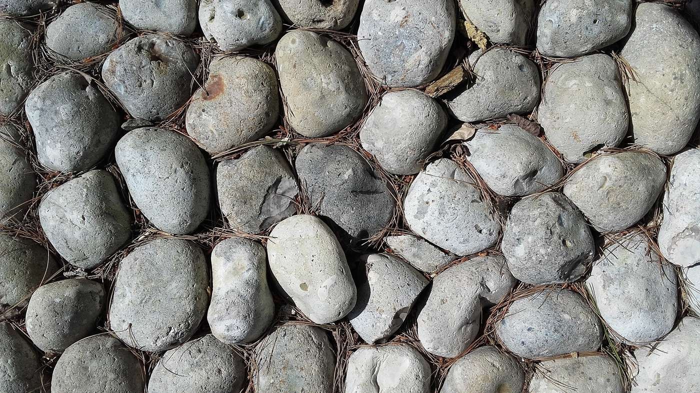

お店の由来と想い
ABOUT
西国街道沿いの宿川原町にある、築約200年の民家を店主自らが改装した文庫カフェです。不動産屋で見つけた建物は、当初は建て替えるつもりだったものの、古民家の雰囲気が気に入ってセルフリフォームに。2019年に建物と出会い、約3年かけて、屋根の工事と傾きの修正を除く壁・床・棚・テーブル・椅子・屋内の電気工事まで手がけ、2022年3月にオープンしたと紹介されています。
かつて土間だった場所に手作りのテーブルと椅子が並び、広間の本は閲覧のほか購入もできます。店主は「時間を気にせず、好きな本を手に取ってゆっくり長居してほしい」と語っています。
※店名「土かべ」の由来は、確認できた資料に記載がないため、ここでは触れていません。情報は2022年の取材記事などによるもので、現在の内容はInstagramでご確認ください。

メニューと本
MENU
2022年の取材記事では、次のようなメニューが紹介されていました。現在の内容・価格は準備中です。
本棚には環境・社会・趣味・料理などのテーマの本や絵本が並びます。



| 営業時間 | 準備中 |
|---|---|
| 定休日 | 準備中 |
| 電話 | 準備中 |
イメージ
PHOTO



口コミ(イメージ例)
VOICE
イメージ例
古い土間の席で、気づけば本を一冊読み終えていました。コーヒーを飲みながら、時間を忘れられる場所です。
イメージ例
街道を歩いた先にある古民家の雰囲気が素敵でした。ケーキと一緒にゆっくり過ごせました。
イメージ例
本棚を眺めているだけでも楽しく、気になった一冊をその場で選べるのがうれしいです。
※上記は制作側が作成したイメージで、実在のお客様の声ではありません。
写真クレジット
写真はフリー素材のイメージで、店舗の実際の様子ではありません。縮小・切り抜きなどの加工をしています。
- Coffee Beans / megforce1 / CC0 1.0(撮影地: 不明)
- Croissant Isolated On White Background / personalgraphic.official / CC0 1.0(撮影地: 不明)
- Mocha Cake - Djanogly Café, Tate Britain 2026-03-24 / Andy Li / CC0 1.0(撮影地: 不明)
- Chocolate financier / Syced / CC0 1.0(撮影地: 不明)
- Chocolate raspberry dessert / Funknendai / CC0 1.0(撮影地: 不明)
- Toasted oatmeal bread with butter and apple butter - Massachusetts / Daderot / CC0 1.0(撮影地: 不明)
- Beans (42182293175) / Skitterphoto / CC0 1.0(撮影地: 不明)
- A lot of coffee beans / www.Pixel.la Free Stock Photos / CC0 1.0(撮影地: 不明)
- Coffee Beans / fireskystudios.com / CC0 1.0(撮影地: 不明)
- Croissant, whole / SKopp / CC BY-SA 3.0(撮影地: 不明)
- Window frame shadow on a curtain (Unsplash) / Steinar Engeland / CC0 1.0(撮影地: 不明)
- Texture 2017 34 / Laurent.Jamaire / CC0 1.0(撮影地: 不明)
- Wood Texture Background / Bango Textures / CC0 1.0(撮影地: 不明)
ライセンスの詳細は creativecommons.org をご覧ください。